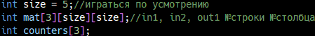
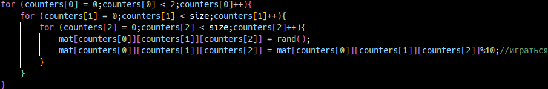
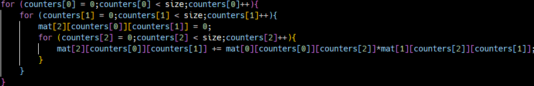
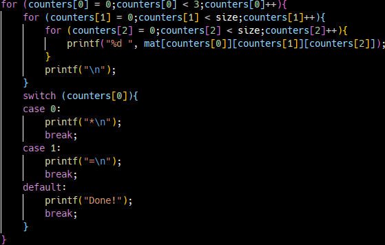

Принципы работы перемножителя матриц
Сначала компьютер создаёт переменную size и 2 массива, один предназначен для хранения 3-х квадратных матриц, другой - для хранения счётчиков циклов.
Затем компьютер заполняет 2-е первые матрицы случайными числами для дальнейшего их перемножения.
Самый сложный этап - перемножение матриц. Всего 1-а ошибка в формуле и программа будет работать некорректно, нужно быть максимально внимательным.
И решающий этап - вывод. Здесь тоже можно допустить критическую ошибку, но это гораздо сложнее, если есть комментарий в коде, объясняющий значение счётчиков и измерений массива.
Проверим работоспособность на примере:
| 3 | 6 | 7 | 5 | 3 |
| 5 | 6 | 2 | 9 | 1 |
| 2 | 7 | 0 | 9 | 3 |
| 6 | 0 | 6 | 2 | 6 |
| 1 | 8 | 7 | 9 | 2 |
| 0 | 2 | 3 | 7 | 5 |
| 9 | 2 | 2 | 8 | 9 |
| 7 | 3 | 6 | 1 | 2 |
| 9 | 3 | 1 | 9 | 4 |
| 7 | 8 | 4 | 5 | 0 |
| 169 | 78 | 80 | 136 | 103 |
| 156 | 63 | 52 | 171 | 119 |
| 165 | 69 | 41 | 166 | 109 |
| 102 | 84 | 80 | 96 | 50 |
| 216 | 82 | 78 | 169 | 127 |
Как видим, программа решила пример правильно, значит в ней нет критических ошибок. Спасибо за внимание!